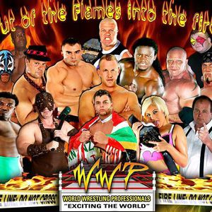
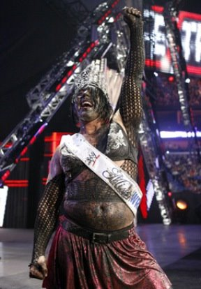
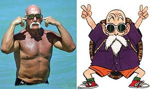
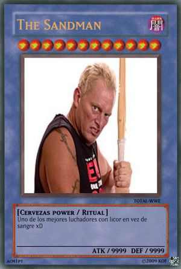

World Wrestling Entertainment
 De: La Frikipedia, la enciclopedia extremadamente seria.
De: La Frikipedia, la enciclopedia extremadamente seria.
| De la serie empresas malignas:
|
| World Wrestling Entertainment
|
|
|
| Perteneciente al grupo:
|
Entretenimiento Barato
|
| Se dedica a:
|
Entrenar drogatas Luchadores
|
| País de origen:
|
Gabachopolis
|
| Año de fundación:
|
En el mismo año que hulk hogan.
|
| Super Presidente:
|
Bush Vince McMahon("Mr McMahon")
|
| Nivel de maldad:
|
Demasiada
|
| Empresas absorbidas:
|
varias como la wcw y esas empresuchas.
|
| Número de empleados:
|
Estupidos Bastantes
|
| Atentados contra la humanidad
|
Tener tantos shows y que todos sean iguales
|
| ¿Se aconseja trabajar aquí?
|
Solo si quieres ser millonario No
|
| ¿Se recomienda el boicot?
|
Solo aveces.
|
| Cantidad de denuncias:
|
Las borran
|
| Sitio web:
|
Página oficial de World Wrestling Entertainment
|
La WWE es una empresucha respetable empresa que se dedica al teatro barato Pressing Catch actualmente dirigida por un pelmazo Vince McMahon teniendo actualmente 3 shows Smackdown!(Golpe en los...), Raw y NXT.
Historia de la WWE
En esos tiempos se llamaba WWF, tiempo en el cual esta empreza empezaba a ser respetable (Si, aunque hoy dia no lo sea) Hulk Hogan era el idolo de todos en esos tiempos y fue el primer wrestlemania el cual tuvo un rotundo exito. Despues fue y se comio un ECW para abrir NXT.
 Las tipicas copias baratas de luchadores de la WWE
 Algunos luchadores son bastante raros.

Otros son bastante peculiares.
 Y los que fueron tan conocidos, que se los adora en el
Japón.
 Con la absorción de la competencia, se comenzó a distribuir una baraja de
Yu-Gi-Oh! conmemorativa.
Luchadores
Artículo principal: Anexo:Lista de luchadores de la WWE
En la WWE hay luchadores muchos pelmazos entre los mas detacados estan:
- John Cena - La cara de la empresa desde 1800 a.C.
- Batista - El mas
dopado fuerte.
- Jeff Hardy - El mas drogata, resorte humano.
- Santino Marella - El bufon de la empresa.
- Undertaker - El mas anciano.
- MVP - Muy Vien Pajero.
- HHH - El que tiene un nombre de solo tres letras.
- Billy - El presidente de WWE Solo que no lucha nunca por
miedo de que se quiebre la cintura no tener feudos.
- Venus - El maricón roba-novias que aparece poco.
- Heath Slater - El más jobber
- Rey Mysterio - El que se cree el pajaro volador
- Sin Cara - El nuevo Rey Mysterio
- Viscera - El más gordo de la empresa
- Goldust - El luchador que tiene el culo dorado y es el más afeminado de la empresa
- Shane McMahon - Llegó a luchar gracias a su papi Billy
- Rob Van Dam - El más extremo de la empresa (aparte de Billy)
Shows
- Raw: Show mas viejo de la WWE esta desde 1993 donde destacaron toda la bola de drogatas como La
Mole Roca, HBK,Undertako, Ric Flair, etc y el cual ha sobrevivido hasta nuestros dias (Con muchos esfuerzos), pasa cada lunes.
- Smackdown: Como ya se explico significa Golpe en los... se le llama la marca azul (nada que ver con el cruz azul).
- Superstars: Show de basuras o jobbers, para ir solo tienes qe mostrar tu culo.
- Main Event Como dice significa evento principal, en donde sus luchas principales son con las protas mas importantes y son los que se la
chupan muestran su tecnica a vince.
- WTF: Show no televisado por la WWE por que era muy
dificil mierda
- NXT Donde los principiantes empiezan a salir por la tele haciendo su mierda.
PPVS (Pay per Masturbation Views o Pague Para Ver)
Los fines de semana son aburridos pero se invento Vince unos eventos.
- Extreme rules: Uno de los eventos mas violentos donde se sacan hasta las tripas. son las revanchas de wrestlemania.
- Fastlane: Evento donde tienes que chocar carritos
- Battleground: Nada importante en este PPV, solo sirve para $%#"& cuando salen las divas.
- Mony in bank: 2 luchas estelares de 8 para ganar un contrato, el contrato tiene el poder de violar a los otros 7 que perdieron, y retar al campeón cuando se le de la hijoeputa gana.
- Summerslam: Evento que se realiza en Verano, uno de los principales de la empresa.
- Night of Champions: Evento donde todos los campeones con sus títulos son defendidos a
balazos contra los retadores.
- Hell in a Cell: Anteriormente era No mercy , Evento donde supuestamente todos los combates estelares son en celdas infernales. Uno de los favoritos de El
follador Enterrador.
- Payback: Evento que cambia de nombre como tu cambias de boxers al dia, Antes era Taboo Tuesday, Luego Cyber Sunday, luego WWE Anhilation, Bragging Rights y ahora es Payback. En este evento tu controlas el
Mundo evento torturándolos desde tu casa.
- Survivor Series: Consiste en meter a unos 15 luchadores en una casa o en una isla y dejar que se den ostias hasta que al final, porque los demás hayan muerto o los hayan echado, solo quede uno. Este evento lo echa telecinco, no cuatro. Anteriormente se llamaba Gran Hermano
- TLC: Es el reemplazo de Armaggedon, es evidente de que se trata esto, darse con sillas de cartón, mesas de unicel y escaleras de algun otro material sintético para ganar títulos comprados en cualquier tianguis
- Royal Orgía: Todos contra todos. El Main event o evento principal suele ser un combate con un total de 40 luchadores que van entrando a cada minuto al ring hasta que solo quede uno, el ganador se enfrentara a algun campeon en Wrestlemania .
- Elimination Chamber: Evento donde se hacen las Elimination Chambers. Es en el que abunda mas
salsa de tomate sangre
- Watermania :El gran torneo por excelencia del pressing catch,donde los mejores se juegan su titulo a cambio de ostias. Destacar que de 30 ediciones 21 veces seguidas las ha ganado El Enterrador y la ultima la perdió contra el FUCKING 5.
Se repite otra vez el circulo vicioso empezando en Extreme Rules
Títulos
Esta es la lista completa de los titulos actuales.
- WWE Championship: Junto con el World Heavyweight Championship, el más importante de todas las ligas, el actual campeón es SummerSlam haciéndole 16
felaciones German Suplexes y dos F-5.
- World Heavyweight Championship: Es de la liga azul de segunda importancia que antes era de la WCW pero como esa mierda ya no existe ahora es de la WWE en donde el actual campeón es Brock Lesnar,que consiguió dos títulos solamente ganando una pelea.
- Divas Championship: Cinturón para putas, ahora es unificado y es de las 2 ligas, la actual campeona es Nikki Bella,una buena
perra diva,que consigui el titulo haciendo que su melliza mas puta que ella Brie Bella bese a la anterior campeona Aj Lee.
- WWE Tag Team Championship: Título por parejas de las dos marcas luego de ser unificado por DX con el World Tag Team Championship. Actuales campeones son
el puto Damien MizDow al vencer a el equipito dorado,los españoles y a los mellizos samoanos en una actuacion pelea de 8 hombres.
- United States Championship: Junto al Intercontinental, son los cinturones individuales de menor importancia, aunque grandes leyendas del Wrestling lo han poseído y el actual campeón es un rusito que lo único que hace es pegar patadas e insultar a los Estados Unidos.
- Intercontinental Championship: Junto al de los estados unidos, El mas chingon de todos, pero de menor prestigio, el que lo tiene actualmente es Luke Harper, un
loco hombre que al separarse de su familia de locos The Wyatt Family le gano a Delfín ZigZag.
- NXT Championship: Titulo más
cagado nuevo de la WWE que lo poseen los jobbers nuevos talentos, el actual campeón es Adrian Neville,un loquito imitador de rey misterio que no hace mas que tirarse de las esquinas haciendo diez giros en el aire y cayendo sobre el rival.Le gano el campeonato a el idiota líder de la bolievers Bo Dallas.
- NXT Divas Championship: El titula de las divas en desarrollo, la primera campeona fue Paige luego de ganar un torneo, pero al haber ganado el campeonato de las
putas divas, este campeonato quedo vacante, por lo que se hizo otro torneo que lo gano Charlotte.
- Money in the Bank Contract Championship: Esto te da una oportunidad a través de un maletín de ganar una oportunidad por un año a cualquier campeonate de la WWE, en este caso el que tiene la oportunidad por el WWE World Heavyweight Championship es Seth Rollins aprovechando cuando los otros eran atacados y traicionando a
el escudito The Shield vendiéndose a la autoridad.
- Internet Championship: Este título fue creado por Zack Ryder, porque este
puto no consiguió ni una mierda campeonato.
Antiguos títulos
- Cruiserweight Championship: Después de que Hornswoggle se lo quitara a Chavo Guerrero, la Manager General de SmackDown! Vickie Guerrero le pidió que se lo diera, ya que creía que había quitado el prestigio de título.
- ECW Tag Team Championship: Lo cancelaron porque ya no existe esa mierda.
- Television Championship: Lo convirtieron en el radio championship.
- Radio Championship: Lo mismo que el de la televisión, solo que con radio, se convirtió en el Internet championship.
- Hardcore Championship: Título de RAW, que ha pasado por las manos de grandes luchadores como Jeff Hardy y Mick Foley, fue cancelado por la era PG y porque lo defendían en cualquier lugar (incluso hasta en el baño).
- Light Heavyweight Championship: Fue un de los cinturones con menos tiempo activo, fue cancelado por que todos los luchadores engordaron mucho.
- Millon Dollar Championship: Duro muy poco tiempo su creador fue el
cabrón Sr.Ted Dibiase que se lo dio a su hijo de puta de Ted Dibiase Jr. y luego a las manos y el culo de Goldust.
Quienes la siguen
La WWE cambió de publico con el paso del tiempo. en los 80s cuando Hulk Hogan era el superheroe la WWF estaba orientado a niños que venían del colegio a tomar la leche, después a mediados de los 90s llego Steve Austin y empezó la era Attitude con la cual la WWF se ganó a grunges, hardcores y toda la generación X. Después cambiaron de nombre a la WWE y con la llegada de John Sida, Bultista y Randy del Orto empezaron a llegar los retardados Fanboys, entre los cuales se encuentran Frikis, Emos, Flaytes y demas basuras Veáse: Wrestlingmaniaco
Empresas Enemigas
- AAA (Bueno, mas bien la WWE siente pena ajena de ellos)
- TNA (Su copia barata)
- Ring Of Honor (Hasta la wwe tiene mas honor)
- Mortal Combat Entertainment (MCE). Aun no se crea pero, ya hay discrepancias.
¿Sabias qué...
- ...la WWE es actuada (ah, no me había dado cuenta...)?
- ...la ECW nunca fue extrema?
- ...Undertaker es mas viejo que tu padre?
- ...y que tu padre es mas viejo que el Undertker?
- ...Daniel Austin fue rubio y ahora se tiñó de negro porque se hechó petroleo
- ...Matt Hardy vive con el niño loco alemán?
- ...los muy drogatas usan esteroides?
- ...Mr McMachon es un
pelmazo pervertido?
- ...uno de los movimientos mas famosos se llama comida de perro (Pedigree)?
- ...la mayoría de las
zorras divas si están buenas?
- ...y que Beth Phoenix es un transexual?
- ...la Influenza fue causada por Jonh Cena (gripe por-cina)?
- ... los gusanos de boogeyman son de gominola ?
- ... si John Cena, Randy desayuna?
- ... si Triple Hache, Shaw Michaels No Hache ?
- ... Jeff Hardy no conoce la diferencia entre aire y tierra?
- ... Las
zorras divas no saben luchar?
- ... Barney es el fan #1 de Triple Hamburguesa con Queso?
- ... Juan Merienda es como los pokemones, solo conoce tres ataques?
- ... La WWE es mejor que la TNA solo por que lleva más años?
- ... El equipo Degeneration X (DX), son afeminados ?
- ... Mi pito es mas grande que el big show?
- ... Son copia a TNA?
Vease tambien
Enlaces externos
 Lucha Libre Lucha Libre 
|
 Luchadores Luchadores 
 Empresas Empresas
 Estilos de Lucha Estilos de Lucha
 Otros Otros
|
Autor(es):
- Krusher
- Nexo
- Haakjvork
- KeleX
- Metallicachile
- Geniusducky
- Doctor grijander
- MURO DE AGUAS
- Max Slug
- Frikiman
Frikipedia 2005-2016, Licencia
GFDL 1.2 - Extraído por FrikiLeaks